About Me
Hello! 😃 I'm Girvin, a Mechanical Engineer from the National University of Singapore!
Education
National University Singapore
Bachelor of Engineering (Hons): Mechanical Engineering | Minor in Quantitative Finance and Data Analytics
(Expected Date of Graduation → 2026)
Pursuing a specialization in Energy and Sustainability
Stanford University
Management Science and Engineering
Attached to Stanford under the Management Science and Engineering department from Aug 2024 to July 2025. Was also at Stanford under the International Honors program over the summer of 2023, a progam that extends to applicants across 17 countries under a highly rigorous and selective admission process.
Classes I took:
- Technology Entrepreneurship (A) → The venture we worked on was selected as Investor's Top Pick by panelist of Principals and Partners from VCs across the Bay Area.
- Solving Social Problems with Data (A)
- Global Entrepreneurial Marketing → Attached to Windborne, an AI Weather Forecasting startup, for a GTM Strategy project.
Work Experience
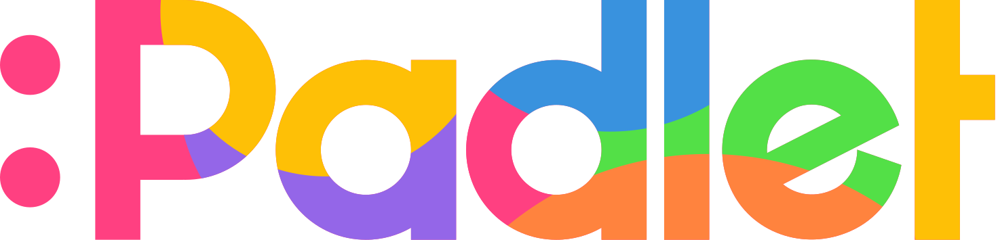
Data and Operations Engineering
At Padlet, our vision is to help anyone go from thought to pixel in the fastest, easiest, and most beautiful way. It's a multi-media Ed-tech tool that allows users to collaborate through boards in real time. Over 40 million people use our product every month, and we strive for a future where 'Every child in the world will grow up with Mickey Mouse and Padlet.'
At Padlet, I:
- Designed and built multiple internal tools ands automations with Airtable and Zapier for key functions across the customer journey lifecycle (lead conversion, onboarding & renewals), saving 2+ hours per day for 7+ team members.
- Built real-time tracking dashboards on MetaBase with SQL, driving strategic insights that directly influence marketing efforts, revenue strategies, and customer journey success.
- Conducted comprehensive market research to propel effective outbound campaigns (Go-To-Market strategies) and ignite key partnerships with potential resellers and untapped markets across the world.
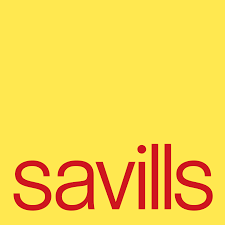
Energy and Sustainability Consultant
The Energy and Sustainability Management department at Savills Singapore is leading the region's efforts of decarbonizing the built environment industry. We provide turnkey services, from project proposal and retrofit design, to its implementation. Our core services include Energy Audits, End-to-end Retrofit Design, Management, and Implementation (HVAC, Lighting, Plant), and Green Mark Consultancy.
As a consultant, I:
- Led the decarbonization roadmap for 6 sites of diverse use-cases across Singapore, curating extensive sustainability reports where utility bill savings of up to 20% are identified, designed, and proposed via HVAC and lighting retrofit.
- Created intuitive dashboards for Building Management System data, where outliers are rectified to maintain the upkeep of engineering systems, and data extrapolation is streamlined, reducing the department's data analysis lifecycle by 18%.
- Engaged in client-facing opportunities to assess building health and conduct energy audits, consulting on Green Building certifications such as Green Mark, WELLS and LEED.
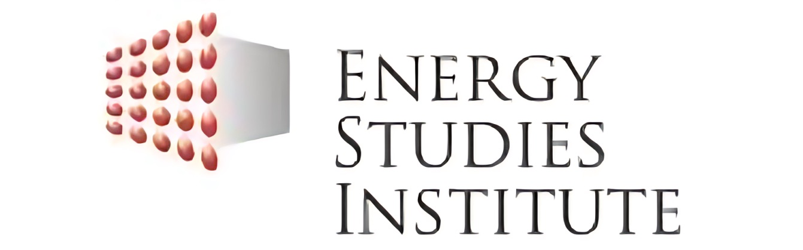
Mechanical & Electrical Carbon Calculator Intern
The Energy Studies Institute is an independent research institution in Singapore with a focus on Energy Economics, Energy Security and Energy, and the Environment.
The Built Environment division is developing a calculator (enterprise software) that enables its clients to calculate the magnitude of embodied and operation account from Mechanical and Electrical products in a building.
This not only catalyzes the energy transition as corporations can make well-informed and sustainable decisions but allows buildings to retrofit its and M&E equipment inefficiencies accordingly.
At ESI, I:
- Led data processing for switchgears, switchboards and transformers.
- Analyzed and extrapolated trends with Python and Excel, built visualization dashboards that enhanced the readability of data presented, and improved the accuracy of emission calculations.
- Initiated research on SF6 (Sulfur Hexafluoride) and how oil leakages in transformers caused by poor assembly and or maintenance may indirectly contribute to additional global warming potential, expanding the calculator's use-case
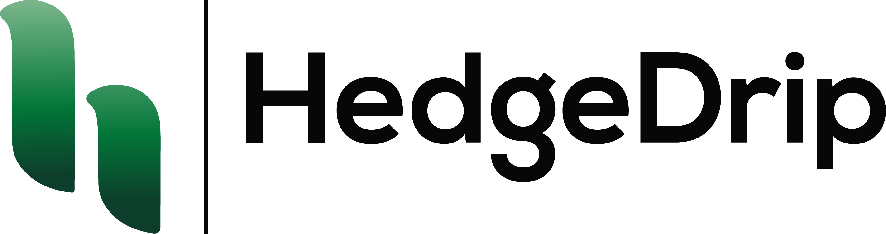
Product Manager
HedgeDrip is an early-stage B2B FinTech startup. It's value proposition is Trail Guide, a calculator that accurate discerns how much its user have to be earning to achieve their financial goals in the next 5, 10, and 15 years.
As a Product Manager, I:
- Collaborated with cross-functional teams in developing HedgeDrip's product vision, thereby allowing efficient execution of product strategy.
- Led market research to analyze consumer trends in Southeast Asia's FinTech space. Conducted user-journey interviews to verify findings and assess HedgeDrip's product-market fit.
- My major highlights was identifying key pain points of our landing page's interface when conducting user-journey interviews. As such, with Figma, I designed and spearhead A/B testing on my proposed changes, and this saw a 35% surge in conversion rate.
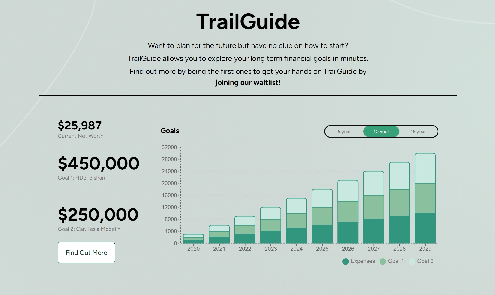
Projects & Competitions
Beyond academic commitments, I have a strong passion for leveraging innovation and engineering to tackle social problems. Here are some projects I have worked on how did they turn out.
CalHacks 11.0: The House Fund: "Cal" Track
Driven by a personally felt pain point of poor faculty to student ratio that exists in many educational institutions, we built EduGap, an AI-driven Chrome Extension for Google Classroom. Our platform allows students to get access to custom chat bots, which outputs accurate and real-time answers based on resources (from various file types to assignments) uploaded by teachers.
On top of this, using machine learning algorithms and vector embedding for text, we created an algorithm that analyzes what topics students are most confused about and then provide teachers real-time feedback and recommendations. This allows teachers to identity recurring knowledge gaps that exists within their classes, increasing the quality of their teaching plans and student-teacher interactions.
Our vision with EduGap is to un-antagonize the use of AI in our classrooms, and instead bridge the gap that exists between faculty in students in oftentimes strained educational systems.
To learn more about our project, feel free to check out our Devpost!
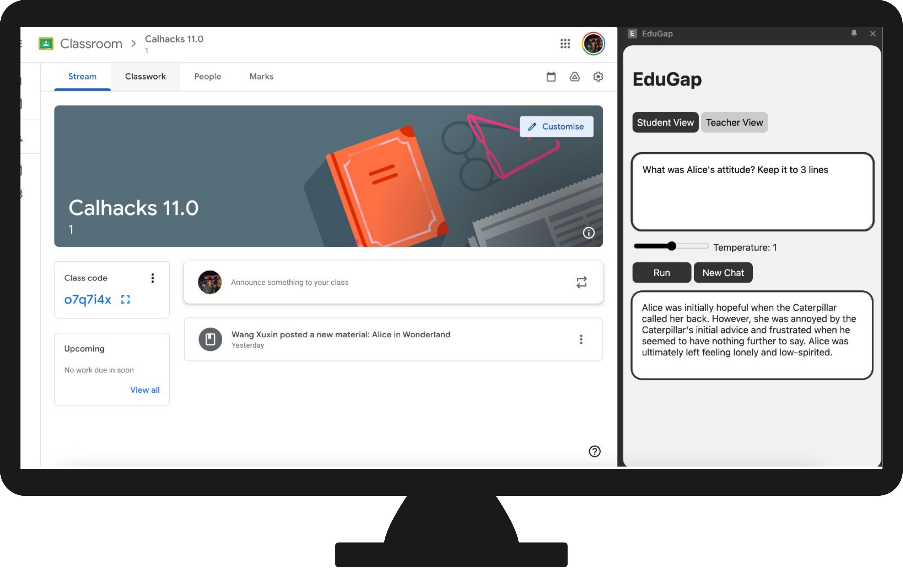
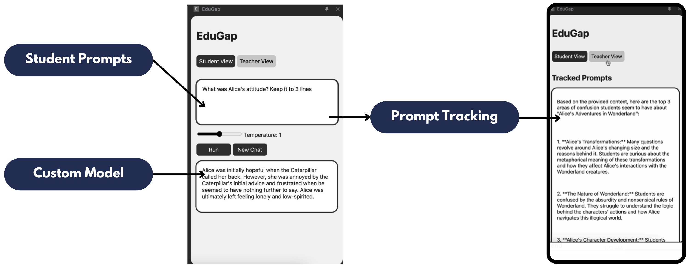
NTU Port 63 Hackathon → 1st Place
With a problem statement of helping Persons With Disabilities to navigate multi-tenanted places, we created a proximity-based matching solution that leverages mall workers as aids for visually-impaired individuals to navigate through malls.
As a Product Manager, I led product development, market research, business development and secured Letter of Intents for our pilot project from malls in Singapore and Indonesia.
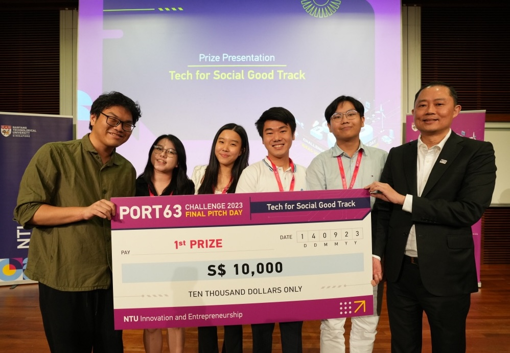
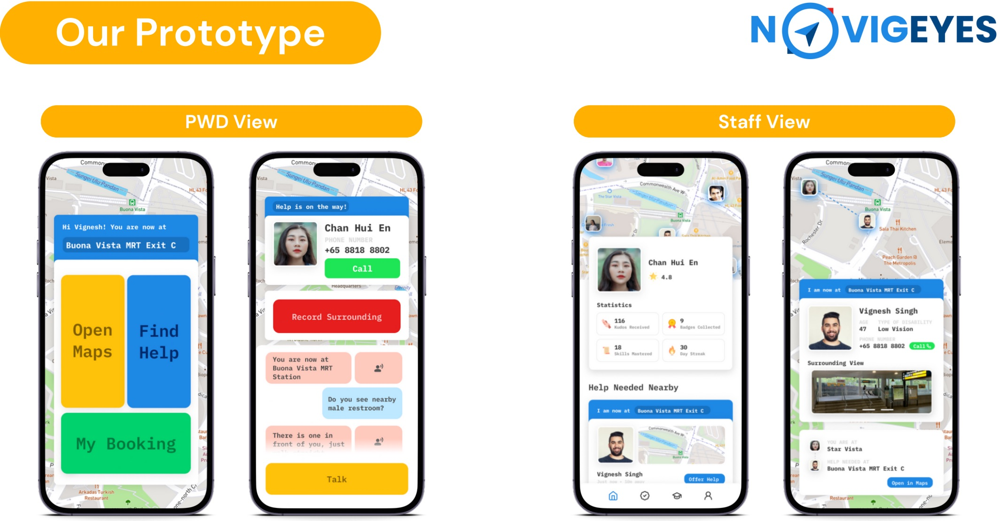
N-Novate x SDG Open Hack SG 2023 → Most Socially Impactful
With a problem statement of helping Persons with Disabilities work on equal footing with their peers and an aim to reduce inequalities by creating more opportunities for youth with disabilities, we proposed offering a platform where we can train creatively-inclined youths to sell their reworked thrifted clothes on our marketplace.
Leading business development, I crafted our business and revenue model, sourced for potential institutions we can partner with, and strategized competitor analysis.
We clinched the *most socially impactful solution* award, and was offered the green lane for a 10K Venture Initiation grant.
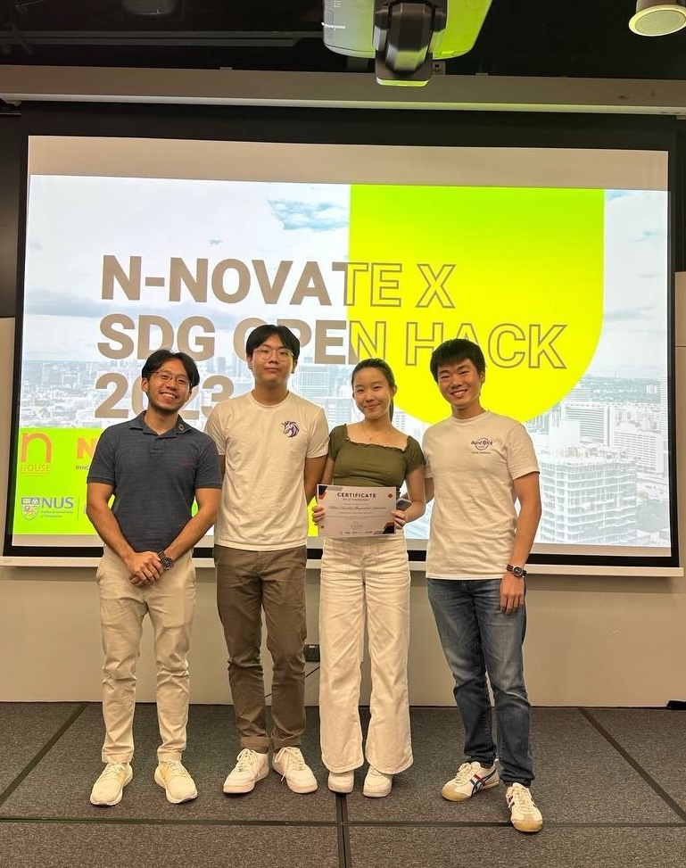
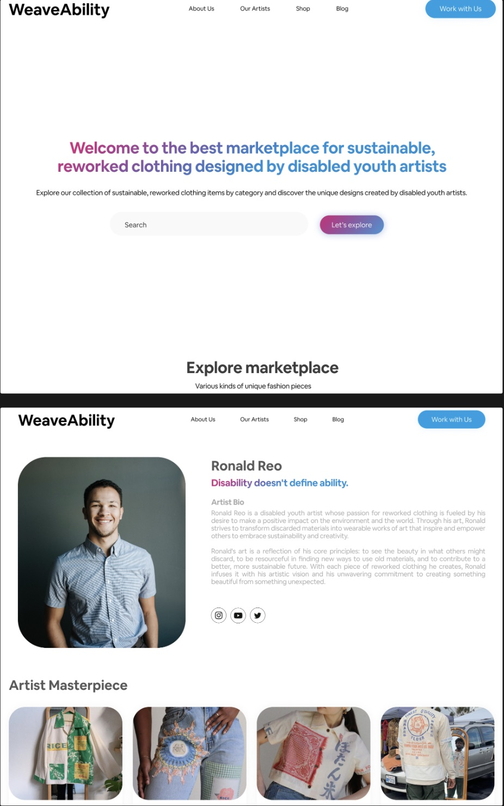
Algorithmic Mitigation of Affective Polarization
Machine Learning | Policy Analysis (Link to Project)
My team and I were interested in how the adverse consequences of affective polarization in the US can be mitigated via social media algorithms. We sought to minimize users' exposure to emotionally-charged social media content with an optimization model utilizing real-time data and binary decision variables.
During this project, I led data cleaning and analysis of data sets from Pew Research Centre, Kaggle etc. with Python. Lastly, we researched Information-to-Action implementations and evaluated Public Policy and Private firm routes, allowing stakeholders involve to individually decide which path best maximizes top-down and bottom-up change.
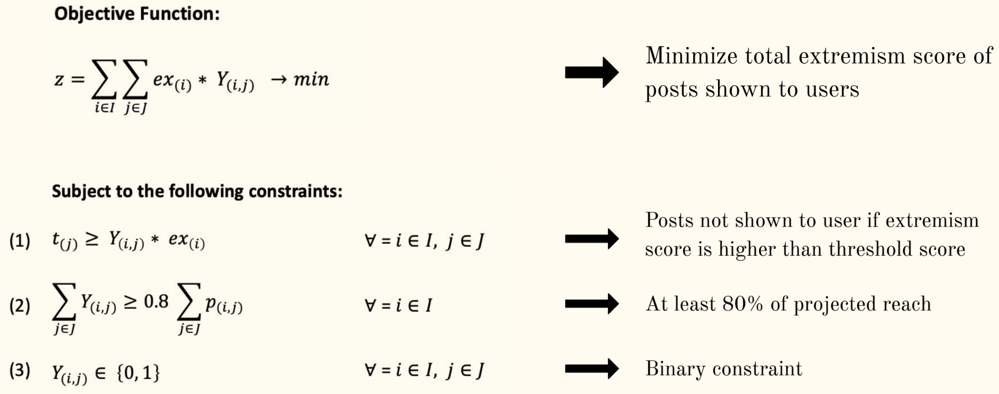
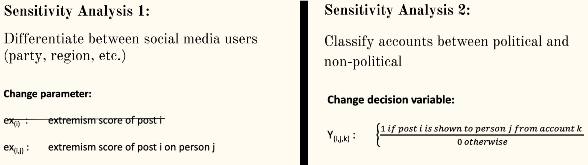
Autonomous Steering Robot
In this project, my team and I were given the task to engineer a robot that was capable of navigating across a black-against-white terrain trek filled with curves and turns.
With LDRs and LEDs as the robot's eyes, we were able to instruct the robot (with Arduino) to execute real-time path adjustment. In other words, when both LDR detects low light levels (as the color of our terrain is black), the robot will continue on a straight path.
However, if, for example, the left LDR detects high light levels (as it approaches a curve that demands a right turn), the robot will then halt movement in its right wheels, allowing the robot to slowly turn right until both LDR detects high light levels, in which it will continue traversing forward.
As the Mechanical Engineer of my team, I was in charge of building the robots body and assembling its chassis and wheels. A key highlight was when I successfully optimized the positioning of the its 'eyes' and wheels to increase the turning success rate of our robot.
Contact Information
Feel free to connect with me: